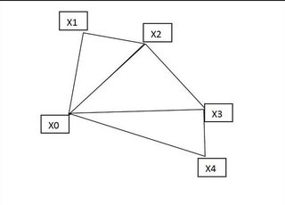

Help your granny!
Points: 5 kyu
Kata ID: 5536a85b6ed4ee5a78000035
Your granny, who lives in town X0, has friends.
These friends are given in an array, for example:
array of friends is ["A1", "A2", "A3", "A4", "A5"].
The order of friends in this array must not be changed since this order gives the order in which they will be visited.
Friends inhabit towns and you get an array
with friends and their towns (or an associative array), for example:
[["A1", "X1"], ["A2", "X2"], ["A3", "X3"], ["A4", "X4"]]
which means A1 is in town X1, A2 in town X2...
It can happen that we do not know the town of one of the friends hence it will not be visited.
Your granny wants to visit her friends and to know approximately how many miles
she will have to travel. You will make the circuit that permits her to visit her friends.
For example here the circuit will be:X0, X1, X2, X3, X4, X0
and you will compute approximately the total distance X0X1 + X1X2 + .. + X4X0.
For the distances you are given an array or a dictionary that gives each distance X0X1, X0X2 and so on. For example (it depends on the language):
[ ["X1", 100.0], ["X2", 200.0], ["X3", 250.0], ["X4", 300.0] ]
or
("X1" -> 100.0, "X2" -> 200.0, "X3" -> 250.0, "X4" -> 300.0)
which means that X1 is at 100.0 miles from X0, X2 at 200.0 miles from X0, etc... It's not real life, it's a story... : the towns X0, X1, .., X0 are placed in the following manner (see drawing below):
X0X1X2 is a right triangle with the right angle in X1, X0X2X3 is a right triangle with the right angle in X2, ... In a travel X0, X1, .., Xi-1, Xi, Xi+1.., X0 you will suppose - to make it easier - that there is a right angle in Xi (i > 0).
So if a town Xi is not visited you will consider that the triangle X0Xi-1Xi+1
is still a right triangle in Xi-1 and you can use the "Pythagorean_theorem".
Task
Can you help your granny and give her approximately the distance to travel?
Notes
If you have some difficulty to see the tour I made a maybe useful drawing:

All languages:
- See the type of data in the sample tests.
- Friends and towns can have other names than in the examples.
- Function "tour" returns an int which is the floor of the total distance.